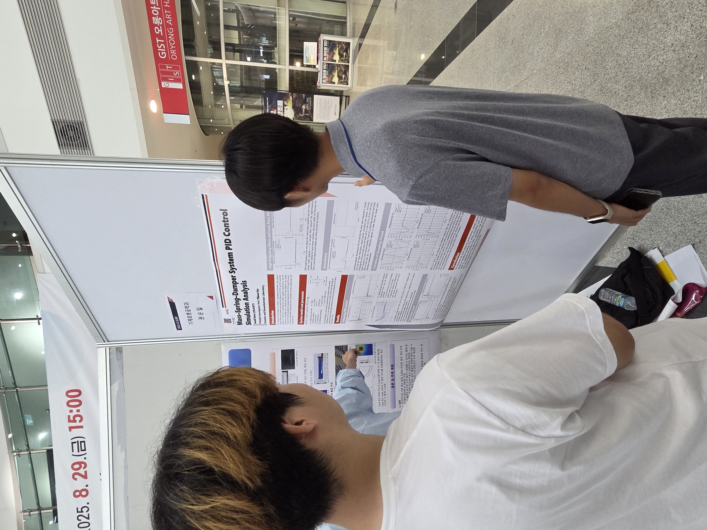
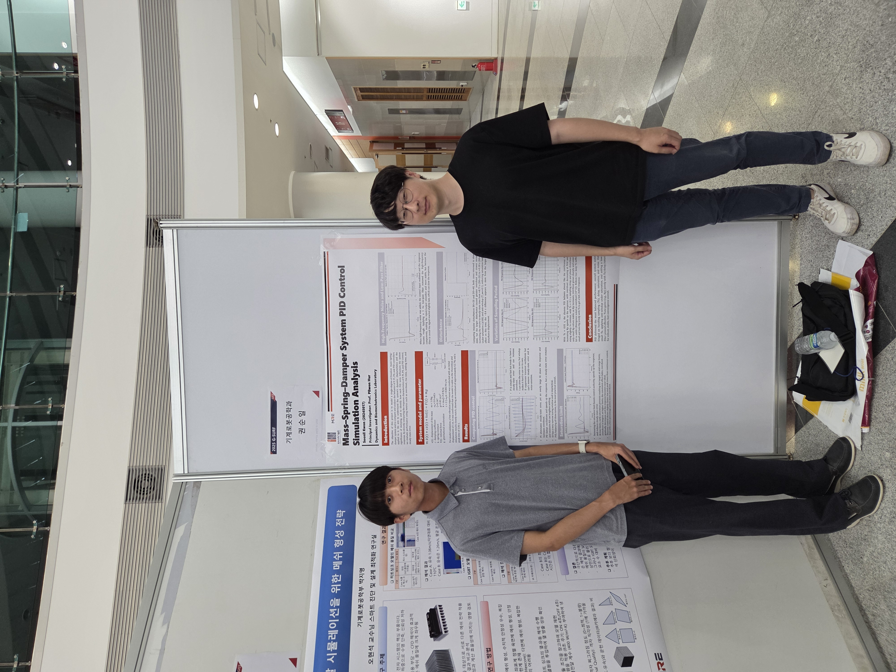
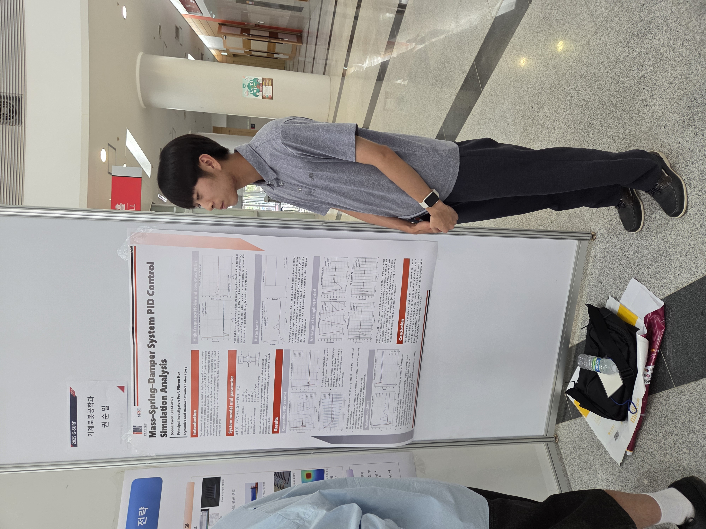

작성자: 권순일 (학부생 2학년)
학부생 2학년인 나는 2025년 여름, 기계로봇공학과 허필원 교수님 연구실에서 GIST Summer Undergraduate Research Fellowship (G-SURF) 프로그램에 참여하였다. G-SURF 포스터 세션에서 “Mass–Spring–Damper System PID Control — Simulation Analysis”를 발표했다. 장소는 오룡아트홀 로비. 지나가던 분들도 많이 멈춰 서서 봐 주셔서, 생각보다 오래 설명하게 된 하루였다. 질량–스프링–댐퍼 단자유도 모델에 P/PI/PD/PID를 차례로 얹어 보고, 연속계와 이산계 구현을 함께 비교한 뒤, 샘플링 주기(Ts), 포화, anti-windup, 고주파 노이즈/저역통과필터, 그리고 임펄스 외란까지 현실 요소를 한 항목씩 따져 본 내용이다.
모델부터 점검했다. 초기 변위 1 m 자유응답에서 오버슈트 약 62.7%, 피크 타임 약 1.06 s가 이론과 시뮬레이션이 잘 맞았다. 이 정도면 뒤에 나오는 제어기 비교를 얹어도 큰 오해는 없겠다 싶었다. 제어기는 “직관적인 결론이지만 늘 확인하면 좋은” 결과가 나왔다. P는 빠르지만 진동이 커지고, I 단독은 바이어스는 없애도 과도응답이 부담스럽다. D는 과도 억제에 도움은 되지만 최종 오차를 없애지는 못한다. 결국 PID가 속도·안정성·정확도의 균형을 가장 잘 잡았다. 현장에서 “튜닝 순서가 뭐가 좋았냐”는 질문을 많이 받았는데, Kp로 뼈대를 세우고 필요한 만큼만 Ki를 얹고, 과도가 과하면 Kd를 살짝 더하는 방식이 가장 무난했다.
여기까지 오는 동안 차명주 조교님의 코멘트가 크게 도움이 됐다. 초기에 Ts=0.01 s만으로도 충분하다고 생각했는데, “연속계와 비교하려면 0.1 s까지 올려 위상 지연부터 확인해 보자”는 조언 덕분에 샘플링의 영향이 훨씬 선명하게 드러났다. 연속/이산 비교는 사실 Ts 선택의 문제였다. Ts=0.01 s에서는 이산 PID가 연속계와 거의 구분이 안 될 정도로 잘 따라왔다. 반대로 Ts=0.1 s로 올리면 위상 지연 영향이 커져서, 작은 Kp에서만 안정하고 Kp를 조금만 키워도 오버슈트가 확 불거나 발산하는 케이스가 생겼다.
포화와 anti-windup은 한계를 너무 낮추면 초반 명령이 잘려 수렴이 느리고 잔류오차가 남는다. 중간값 근처에서 오버슈트가 가장 커지는 구간이 있었고, 한계를 충분히 높이면 다시 빠르게 정착했다. 연속/이산 모두 경향은 비슷했고, 이산 쪽이 약간 더 빠른 대신 오버슈트가 소폭 커지는 느낌이었다. 적분을 쓴다면 anti-windup은 필수라는 것도 다시 확인했다.
노이즈와 필터는 고주파가 조금만 섞여도 입력 채터가 두드러지는데, 3 Hz 근처의 LPF를 두면 파형이 한눈에 매끈해진다. 물론 반응이 약간 느려지는 지연은 감수해야 한다. 컷오프 위치는 결국 성능–지연 절충이다. 임펄스 외란 비교에서는 둘 다 유한 시간 내 재정착했고, 더 큰 외란에서 편차가 커지고 정착이 약간 더 늦어졌다(대략 8.75 s vs 9.18 s). 포화 강제 유무는 재정착 시간 자체에는 큰 차이를 주지 않았다.
전체를 정리하면, 다음과 같다. Kp-Ki-Kd 값만이 아니라 Ts·포화·필터를 세트로 가져가야 “같은 PID라도 전혀 다른 시스템처럼” 움직인다. 이번 시뮬레이션에서는 Ts≈0.01 s, 합리적인 포화 한계와 anti-windup, 3 Hz대 LPF만으로도 응답 품질이 크게 안정화됐다. 다음에는 LPF 컷오프와 지연의 트레이드오프를 더 정량화하고, 일부 조건에서 이산 구현이 연속 구현보다 더 좋아 보였던 구간의 이유도 이론 쪽으로 정리해 볼 생각이다. 지도해 주신 허필원 교수님, 세심한 피드백을 주신 차명주 조교님, 그리고 포스터 앞에서 질문 주신 모든 분들께 감사드린다.


